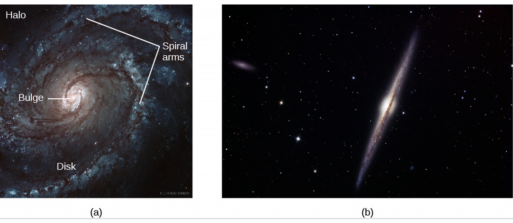
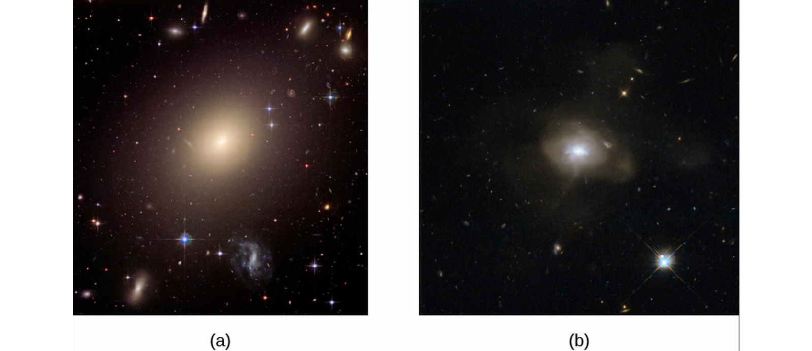
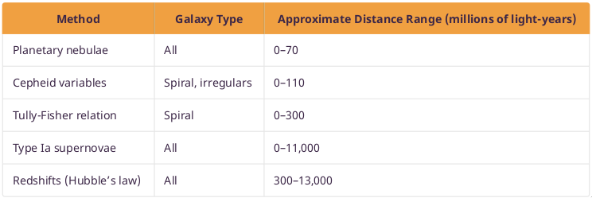

ASTR101 Ch 26-27
Ch 26 - Galaxies
The Discovery of Galaxies
Other Galaxies
- The birth of extragalactic astronomy is cited as January 1, 1925, when Edwin Hubble read his paper on distances to nebulae.
- Prior, only closer nebulae could be properly classified.
- Farther nebulae might be classified as clouds of gas or groups of stars within our galaxy if they were close, or star systems of billions of stars if they were really far away.
- Better telescopes were needed at the time, like the 2.5-m (100-inch) telescope in Southern California which Hubble used to analyze nebulae.
- In some, he found cepheids, allowing him to find accurate distances to the nebulae; for example locating the farthest distance measured until that point, the 900 kLy to the Andromeda galaxy.
Types of Galaxies
Spiral Galaxies

- Identified by their spiral arms, they are also composed of a central bulge, halo, and disk, like the Milky Way. All spiral galaxies rotate.
- About 2/3 of spiral galaxies have boxy/peanut-shaped bars in their centers, termed barred spirals, and it may be that most galaxies form a bar during some point of evolution.
- Differences in sizes of arms, bulge, how defined the arms are, and how prevalent the bar is, Hubble has classified galaxies.

Elliptical Galaxies
- These sphere- or ellipsoid-shaped galaxies consist almost entirely of old stars.
- Typically have no trace of spiral arms.
- Reddish in color (due to population II stars).
- Not very dusty.
- Can get larger than spiral galaxies.

Figure 3: Elliptical Galaxies
- While spherical in nature, they can exhibit various degrees of flatness.
- Galaxies are also categorized by size into giants and dwarfs.

Figure 4: M32, a dwarf elliptical galaxy.
Irregular Galaxies
- Galaxies not matching a category are termed irregular galaxies.
- They typically have lower mass and luminosity than spiral galaxies.
- Contain both population I and population II stars.
- Some of our nearest neighbors are irregular galaxies, including the Large Magellanic Cloud and Small Magellanic Cloud.
Galaxy Evolution
- It's not the case that galaxies evolve from one type to another like stars did on the H-R diagram.
- Collisions and mergers can change spiral galaxies into elliptical.
- Even isolated spirals can change over time, losing definition in their arms as their gas is consumed by star formation.
- For stunning pictures of galaxies: http://hubblesite.org/categories/images.
Properties of Galaxies
Masses of Galaxies
- For spiral galaxies, we can observe the rate of rotation of a galaxy through its redshift.
- This rate can then deduce the galaxy's mass through Kepler's Law.
- We then add the dark matter beyond the galaxy's visible edge by analyzing its satellites, such as stars, star clusters and satellite galaxies.
- This method is not effective with elliptical galaxies, in which stars don't rotate together like in the spiral galaxies.
- Instead, we have to measure the various speeds of these stars and use the fact that the galaxy isn't breaking apart.
- We do this by measuring the Doppler broadening caused by some stars moving towards us and some stars moving away, which simultaneously redshift and blueshift our measurements.
Mass-to-Light Ratio
- Galaxies can be characterized by the ratio of their mass (in units of MSun) to their light output (in units of LSun).
- This mass-to-light ratio reveals what kinds of stars make up most of the galaxy and whether it contains a lot of dark matter.
- For example, a high mass-to-light ratio of 10-20 implies older stars which have completed their evolution and ceased to shine, while galaxies still undergoing star formation range a ratio of 1-10.
- Galaxies containing dark matter can have ratios as high as 100.
The Extragalactic Distance Scale
Variable Stars
- Remember that cepheids divulge their luminosity in their periods of luminosity.
- Fun fact: Walter Baade showed that there were actually two kinds of cepheids in the early 1950s, resulting in calculated distances to all galaxies being doubled!
- While cepheids can help us locate stars up to 108 MLy away, the difficulty is that the telescope has to be good enough to see a single cepheid.
- Beyond a certain distance, we need an alternative method.
Standard Bulbs
- To measure distances, astronomers seeks standard bulbs; objects with the same intrinsic brightness.
- One particularly useful standard bulb is the type Ia supernova which we've discussed are the result of a white star's explosion in a binary system.
- At maximum light, they all reach about 4.9×109 LSun.
- Supernovae are extremely bright explosions, so they can be observed from much further away, and have been measured up to 8 GLy away!
- Hence Type Ia supernovae are the most important standard bulbs when it comes to far distances.
Other Measurement Techniques
- Brent Tully and Richard Fisher found another technique for measuring galactic distances by observing that the luminosity of a spiral galaxy is related to its rotational velocity!
- This makes sense; the more massive the galaxy, the faster objects in its outer regions orbit it.
- So if mass-to-light ratios for various spiral galaxies are similar, we can estimate their luminosity from their mass, which we get from their rotational velocity!
- In practice, Tully and Fisher observed the normally thin 21-cm line of cold hydrogen to measure Doppler broadening, from which they calculated the range of orbital velocities of the hydrogen gas.
- Observations of nearby galaxies show that this method works well, despite not accounting for dark matter.
- Some methods for estimating distances to galaxies:

Figure 5: Table 26.2.
The Expanding Universe
Slipher's Pioneering Observations
- In 1894, wealthy astronomer Percival Lowell established a Flagstaff, AZ observatory and asked one of the observatory's young astronomers, Vesto M. Slipher, to photograph spectra of spiral nebulae for spectral lines corresponding to newly forming planets.
- Despite technological hardships (the unsuitable telescope needed to be exposed 20-40 hours for a good spectrum), Slipher managed to to photograph 40 spiral nebulae from 1912-1932.
- He found an unexpected redshift in the spectra that showed the spirals were moving away at tremendous speeds up to 1800 km/s!
- Only close-by galaxies turned out to be approaching us, the rest were all racing away!
- Meanwhile, Hubble was observing galaxies with the largest then telescope (2.5 m, or 100 inches), with Milton Humason.
- Hubble found that the recession velocities of the galaxies were proportional to how far away they were; the farther a galaxy is from us, the faster it was moving away.
- The constant of proportionality is called the Hubble constant Ho, and is included in Hubble's Law,
\[v=H_{o}d\] where v is the velocity of the galaxy and d how far away it is!
- Ho≈22 km/s/MLy
Hubble's Law and Distances
- Why does this law make any sense?
- Not only does the Hubble constant describe the redshift of galaxies based on how far they are, but it can help us find distances to galaxies based on the observed redshift!
- However, this result is only valid if the Hubble constant has always been constant—if it hasn't, we'll notice it in far galaxies.
- And we did—as we'll discuss regarding the Big Bang, it turns out the expansion of the universe is accelerating with time! This needs to be taken into account to get distances to galaxies; especially for galaxies farther away.
Models for an Expanding Universe
- Why are the galaxies moving away from us specifically?
- They don't! Galaxies are all moving apart from each other, because the universe itself is expanding.
- This also explains the increasing velocity with distance!

- A 3d example: raisins in expanding bread:

- Unlike these models, the universe has no boundaries, edge, or center.
- However, the models accurately portray that neither the ants nor the raisins are themselves actively moving away; it's the space they're in that's stretching out.
- Also, neither the ants nor the raisins themselves are expanding, and this is also the case of galaxies in space.
Ch 27 - Active Galaxies, Quasars, and Supermassive Black Holes
Quasars
Redshifts: They Key to Quasars
- Quasar was short for "quasi-stellar radio sources".
- Discoveries of many point sources of radio emissions came from the same locations as faint blue "stars".
- They had emission lines that didn't match any known substance, in any known phase of matter.
- The spectral lines of 3C 273, for example resembled hydrogen Balmer lines.
- But the redshift would indicate a speed of 45,000 km/s, or 15% the speed of light!
- Note that in such cases we need to use the relativistic form of the doppler formula,
\[\frac{v}{c}=\frac{(z+1)^2-1}{(z+1)^2+1},\qquad z=\frac{\Delta\lambda}{\lambda}.\]
- Other objects were also found to be redshifted known spectra, at even higher speeds.
- Such stars vastly exceed the escape velocity of our Galaxy, and thus must be extra-galactic.
- Astronomers later discovered other objects that appeared starlike, but had no radio emissions.
- Today we call such objects quasi-stellar objects (QSOs); quasars for short.
- Millions have been discovered, all are redshifted (none blushifted).
- They look just like stars in a photo.

Figure 8: One of these bright objects is a star in the middle of our Galaxy, the other a quasar 9 GLy away.
Quasars Obey the Hubble Law
- The Hubble Law is a measure of the expansion of the universe discusssed in Ch 26, maintaining that the relative velocity of two galaxies is dependent on their distance from each other in the expansion of the universe, allowing us to draw inferences about the distance to such redshifted objects by the magnitude of the redshift.
- If quasars are contained in their galaxies, then they must obey the Hubble Law since they move with their galaxies which obey the law.
- So if we show that quasars have the same redshift as their host galaxy, that means quasars move away from us according to Hubble's law.
- Through observations by the Hubble Space Telescope, it's verified that quasars occur at the cores of galaxies, and that quasars do have the same redshift as their host galaxies.
- Quasars are also often involved in galactic collisions.
The Size of the Energy Source
- Being so far away, quasars must be extremely luminous. They also emit energy at X-ray, UV, and radio sources, for a combined luminosity as large as 10 trillion suns. Surprisingly, their luminosity changes on timescales of months, weeks, even days, irregularly.
- Moreover, the region where the brightness varies can't be larger than how far light can travel in the timespan of variation, light-months.

- Pluto (usually outside of the outer solar system) is about 5.5 Ly from us, so a light-month is very small for such a luminous object.
Earlier Evidence
- The plot thickens—even in 1918, unexplained jets were seen coming from the nucleus, or center, of some galaxies; these are known as active galaxies or active galactic nuclei (AGN).
- Astronomer Carl Seyfert found half a dozen with stellar nuclei and found spectroscopically that the nuclei contain gases moving 6 million mph (up to 2% the speed of light).
Supermassive Black Holes: What Quasars Really Are
- To summarize,
- Quasars emit more power than all stars in our Galaxy combined.
- They're about the size of our solar system (tiny!).
- Some are shooting out pairs of straight jets near the speed of light, emitting radio and gamma ray radiation.
- Quasars were more common when the universe was young, so they must have been able to form in the first billion years after the universe began to expand.
- Any guesses?
- That's right, quasars are actually supermassive black holes! Quasars are typically even stroger than the supermassive black hole at the center of our Galaxy.
- Evidence shows that most (probably all) elliptical galaxies and spirals with nuclear bulges have black holes at their centers.
- The energy emitted depends on the mass of the black hole and the amount of matter falling into it.